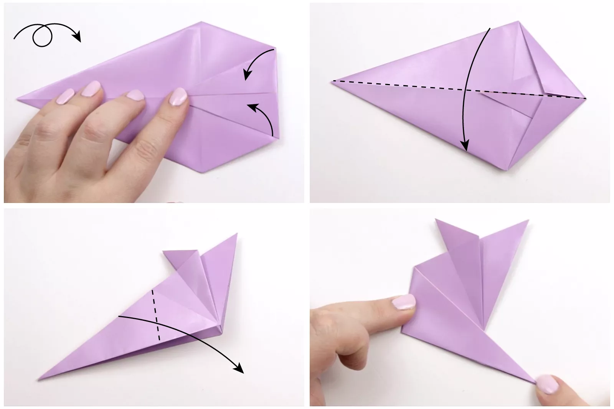

How to Make an Origami Mouse
Origami mice are so adorable and much less frightening than the real thing.
This is an intermediate level project that's even suitable for kids.
From a distance, you might mistake this origami mouse as the real deal,
but unlike their mischievous counterparts, these mice are friendly and non-destructive!
You can make a bunch of origami, all a little differently, by folding the
back and ears differently. There are many mouse postures to make.
This project requires only one sheet of square paper.
Start with your paper pointed diagonally, so it's the shape of a diamond.
If your paper has a white side, have the white side facing up.
Bring the bottom corner up to the top corner, crease well and then unfold.
Next, fold the right corner over to the left corner and unfold.
Fold the lower left and right edges to the central crease. If your paper
is thick, leave a tiny gap in between the two edges.
Unfold the previous step. Fold the top left and top right edge to meet
the central crease—again, if your paper is thick, leave a small gap in the middle.
Focus on the flap on the right side. Pull the inside corner up
and at the same time, push on the lower right side.
Flatten the flap that's now formed in the middle.
Repeat the same process on the left side.
Rotate the paper to the left.
Fold the little flaps to the vertical crease, one on top of the other.
Then, fold them both over to the right. The little flaps which are trapped
there will end up being the mouse's ears.
Take the very right corner and fold it over to where the little red dot is (refer to image).
Unfold the last step and fold that flap behind.

Flip the paper over to the other side. Fold the top right and bottom right
corners diagonally to the central crease.
Fold the paper in half, from top to bottom, flattening the flaps inside
(the top right corner is the mouse's nose).
Fold the left corner (the tail) diagonally down to the right, aligning
the new right edge of the tail with a crease that was created earlier.
You should now have a shape that resembles the fourth image in this step.
Bring the tail back over to the left, making a new crease that is at the same
angle as the left edge (the mouse's back).
Flip the mouse over to the other side. If you want it to sit with its
tail resting on a surface (not sticking up or down), make sure
that the bottom edge of the mouse aligns with the very end of the tail.
Open out the tail end of the mouse, and fold the back of the mouse inside, bringing
the tail back out. This is called an inside reverse fold.
Fold the remaining part of the tail underneath the mouse.
Now you will fold the mouse's ears! Fold one of them back
(you can do different angles here too).
Use a pencil or chopstick to open out the ears.
Use your thumb to push them into a rounded shape.
If you'd prefer your origami mouse to be looking straight
ahead instead of up, you can fold the lower section underneath as well.
Tip: If you're folding this origami mouse with kids, they can draw some eyes
and whiskers to make it more fun, and maybe fold an origami elephant
to go along with your mouse.

Our Purpose Is To Sustainably Make the Pleasure and Benefits of sports Accessible to the Many.
Copyright-2021 Abdul Haq